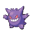
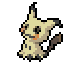
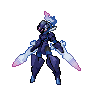
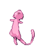
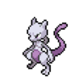

-
Bulbasaur #001

- Grama
- Veneno
Há uma semente de planta em suas costas desde o dia que este pokemon nasce.
A semente cresce lentamente.
-
Ivysaur #002

- Grama
- Veneno
Quando o bulbo em sua costas cresce, parece perder a capacidade de ficar de pé em suas patas traseiras.
-
Venusaur #003

- Grama
- Veneno
Venusaur absorve a luz solar para ganhar energia e para alimentar a sua flor, localizada em sua parte traseira. Depois de ganhar uma certa quantidade de luz solar, a flor vai lançar um aroma doce. Além disso, depois de um dia de chuva, o cheiro do aroma da flor cresce mais forte, atraindo outros pokémon.
-
Charmander #004

- Fogo
A chama que arde na ponta da cauda é uma indicação das suas emoções. A chama vacila quando Charmander está desfrutando de si mesmo. Se o Pokémon fica furioso, a chama queima ferozmente.
-
Charmeleon #005

- Fogo
Charmeleon é um pequeno bípede, dinossauro-como Pokémon com uma aparência semelhante à de sua forma pré-evoluída, Charmander. Charmeleon Charmander difere na medida em que tem uma cor muito mais escura da pele, uma estrutura maior, garras e uma saliência de chifre-como na parte posterior da cabeça, semelhante à de um ornithopod.
-
Charizard #006

- Fogo
O fogo na cauda de Charizard vai mudar para uma cor branco-azulada se furioso. O único chifre que estava na parte de trás da cabeça é agora dois, um em cada lado.
-
caterpie #007

- Inseto
Caterpie é um Pokémon larva verde com marcas amarelas em forma de anel para baixo dos lados de seu corpo. Sua característica mais notável é a brilhante antena vermelha em sua cabeça, a partir do qual ele libera um cheiro para repelir predadores.
-
Blastoise #008

- Água
é um Pokémon do tipo Água, categorizado como Pokémon Marisco e introduzido na Primeira Geração.É a forma evoluída de Squirtle e a forma final de Wartortle.
-
Wartortle #009

- Água
Wartortle são pequenos, bípede, tartaruga como Pokémon com uma aparência semelhante à da sua forma pré-evoluída, Squirtle. Algumas diferenças são que Wartortles desenvolveram garras e os dentes mais nítidas e maiores. Suas caudas são maiores e mais macio do que Squirtle e Wartortle de ter desenvolvido grandes orelhas peludas.
-
squirtle #010

- Água
Squirtle é um pequeno Pokémon, azul-claro com uma aparência semelhante ao de uma tartaruga. Como tartarugas, Squirtle tem um escudo que cobre seu corpo com orifícios que permitem que seus membros, cauda e cabeça para ser exposto. Ao contrário de uma tartaruga, Squirtle é normalmente bípede.
-
Gengar #011
- Fantasma
- Veneno
A cor de Gengar é roxa. Tem orelhas triangulares, tem olhos pretos e seu globo ocular é vermelho e geralmente é sempre visto com um sorriso. Tem duas mãos com três dedos em cada também tem três dedos em cada pé e possui uma cauda.
-
Mimikyu #012
- Fantasma
- Fada
Mimikyu é um pequeno Pokémon cujo corpo é quase totalmente escondido sob um véu. Seus redondos olhos negros são visíveis através de orifícios no corpo de seu disfarce, enquanto a franja de um pé amorfo parece ser visíveis sob a bainha de seu véu.
-
Ceruledge #013
- fantasma
- fogo
Veste um antigo conjunto de armadura impregnado de rancores e empunha lâminas feitas de fogo e energia fantasma. Durante batalha, o poder de Ceruledge aumenta e essas lâminas se transformam em grandes espadas. Aquele que foi cortado por estas ficará com feridas de onde sairá parte de sua energia vital.
-
Mew #014
- Psiquico
Mew é um Pokémon muito curioso e inteligente que só vai aparecer para alguém com um coração puro. Ele adora brincar e nadar, e é conhecido por agir de forma muito infantil, às vezes, querendo que todo mundo confie para brincar com ele. Ele é atraído por canções de ninar e vai tentar ficar o mais próximo ao som da música possível. Ao todo, Mew é conhecido como uma espécie feliz, lúdico e otimista de Pokémon, ao contrário de seu clone
-
Mewto #015
- Psiquico
Devido às suas primeiras visões da raça humana, Mewtwo é conhecido por ser muito agressivo e não pensa em nada, mas luta e derrota seus inimigos. Mais durante o anime o episodio especial A Volta de Mewtwo, Mewtwo parece ter desenvolvido uma natureza muito protetora e guardiã, Mewtwo foi criado por cientistas em um laboratório de genético pokémon, agora este pokemon só pensa em derrotar seu inimigos com seu poder extremo.